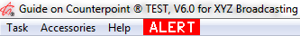

Traffic Alerts
Counterpoint has a built in Alert system that notifies designated users of tasks that need to be performed, such as reviewing a completed proposal, scheduling contracts, or reprinting logs after changes were made. If set to receive Alerts, the user will see a red flashing Alert button at the top of the Counterpoint Screen. Clicking on the Alert button will display the action that triggered the alert, from which actions can be taken to resolve the alert.
Alerts can also be printed by running the Alert Status report.
Note: On version 7.0 and on prior versions, the different sections of the alert screen are selected using a radio button. On version 7.1 and above, instead of radio buttons, tabs are used to separate the different sections.
Sales Alerts
Sales Managers can be alerted when:
- Proposals are set to complete and need to be approved as an order.
- A proposal is set to the Unapproved Proposal status (version 7.1 and above).
- An order has been revised and needs approval to be scheduled.
Traffic Alerts
Traffic can be alerted when:
- Spot or copy changes have been made to a vehicle/week that has already had the final log generated for it so the log will need to be reprinted.
- Proposals have been approved and now require scheduling.
- Contracts have been scheduled into a closed week so the spots have been booked into missed and should be resolved.
- When the process that assigns copy to affiliate spots is unable to find blackout pool copy that can be assigned to a spot, with the result that the generic copy will be used instead, a blackout pool alert will be created (version 7.1 and above only, when the blackout pool feature is used). For more information on the blackout pool feature, see the Copy Screen help document.
When a User’s alert option is on, if there are any current alerts to view, they will see a big red alert button at the top of the screen, as shown below.

Clicking the red “Alert” button will bring up the Alert screen.
Programmatic Buy Alerts
As part of the Programmatic Buy feature, users will see all unscheduled contracts, and all contracts that were scheduled in the last seven days, for Programmatic Buy contracts. This section of the Alerts screen will be hidden if Programmatic Buys are not enabled in Traffic Site Options, and if the signed on user has the "Allowed to Select Programmatic Buys" option set to red on the User Options screen, Contract Types area. (This feature is not fully implemented, and is only available on version 7.1 and above.)
Accounting Alerts
Advertiser or Agency credit alerts automatically show when launching the Traffic system for any user who has full access to the Collections screen.
Accounting can be alerted when:
- A new advertiser or agency is added, and the client needs the credit status set to approved in the system for the order to be scheduled.
- The credit restrictions for an advertiser or agency have been exceeded.
- The cash in advance required for the client is not posted.
Sales Manager Alerts
When you click the Alert button at the top of the screen, you will see a list of completed proposals or orders (rev completed) that require review or approval. Unapproved Proposals will also be shown here when that feature is enabled (version 7.1 and above).
Reviewing Proposals
From the View Alerts screen, select a proposal/order that requires review, and click “View Proposal” to view the proposal (without being able to change it), or “Change Proposal” to change the status. You can also double click a proposal/order on the View Alerts screen to bring it up in “Change” mode.
To approve the completed proposal/order, select “Approved Hold” or “Approved Order” from the Status field dropdown menu near the top of the screen, then press “Save-Go” or “Save-Stay” to save the change. It is also possible to select other statuses such as “unapproved proposal” from this field if the user permissions allow it, or you can change an unapproved proposal to another status such as rejected.
Pressing the “Alert” button will take you from the Proposal screen back to the Alert screen.
Traffic Alerts
There are four available traffic alerts.
- Reprint Log/CP: shows when any spot or copy changes have been made to a day that has already had the final log generated for it to alert the user to reprint the log.
- Contracts that Require Scheduling: shows any contracts that need to be scheduled.
- Missed in Closed Week: shows when a contract was scheduled with spots that booked into a closed vehicle and week (this results in spots booking directly into Missed as the week is closed).
- Pool Alert: appears when the process that assigns copy to affiliate spots is unable to find blackout pool copy that can be assigned to a spot, with the result that the generic copy will be used instead. (Version 7.1 and above only, and only when the blackout pool feature is used.) For more information on the blackout pool feature, see the Copy Screen help document.
Reprint Log/CP
The “Reprint Log/CP” alert will show for the vehicle if:
- A spot was moved in the vehicle/week after the final log was generated.
- Copy was assigned/changed for the vehicle/week for spots between today's date and last log date.
When the Log is reprinted and copy assigned for the vehicle/week with the alert, the Spot Changed and Copy Assigned Alerts will be cleared.
Contracts that Require Scheduling
Any contracts that require scheduling will be listed on the Alerts screen Contracts area with the reason of “Not Scheduled”.
For each contract, the alert shows the creation date and time, contract number, advertiser, product, start date of the order, sales office, and reason the contract is on the alerts screen (“Not Scheduled”).
When you select a contract that requires scheduling on the Alerts screen, three buttons at the bottom of the screen become active:
- Change Order: brings up the Order in Revise mode so it can be edited.
- View Order: brings up the Order in View mode so it can be viewed.
- Schedule: will go directly to the Schedule Screen where it can be scheduled. (The schedule screen can also be accessed by double clicking the contract, or from the Orders screen.)
To clear the “Not Scheduled” alert, schedule the contract.
Missed in Closed Week
The “Missed in Closed Week” notification alerts users when a contract was scheduled into a closed week and the spots were therefore scheduled into missed. For example, if the final log was generated for a vehicle for the week of January 1st, that vehicle and week would be considered “closed”. If a new contract or new or edited contract lines were then entered for the week of January 1st for the same vehicle and then scheduled, the spots would be booked into Missed and the “Missed in Closed Week” alert would be triggered.
The Missed in Closed Week alert displays the creation date and time, the vehicle name of the vehicle with the missed spots, and the log date (using the Monday date of the closed week), in addition to the reason (Missed in Closed Week).
To clear this alert, a spot from the vehicle/week/contract must be moved from missed into an avail. (The alert will also be cleared automatically once the week is in the past as it will no longer be relevant at that point.)
To make it easier to clear the alert, the Spots screen can be accessed directly from the Alerts screen by double clicking the “Missed in Closed Week” alert, or by single clicking the alert and pressing the Spots button at the bottom of the screen. This will take the user directly to the vehicle/week that has the missed spots that require resolving.
The Missed in Closed Week alert will only appear for users that have access to the Spots or Logs screen.
Note: this alert will not come up for those vehicles set to use the "radio station invoice" feature and that have a vehicle name that matches the call letters defined for a station in the affiliate system as by design all the spots for those types of vehicles schedule into missed and are only booked into avails by the invoice import process.
Programmatic Buy Alerts
As part of the Programmatic Buy feature, users will see all unscheduled contracts, and all contracts that were scheduled in the last seven days, for Programmatic Buy contracts. This section of the Alerts screen will be hidden if Programmatic Buys are not enabled in Traffic Site Options, and if the signed on user has the "Allowed to Select Programmatic Buys" option set to red on the User Options screen, Contract Types area.
This feature is not fully implemented, and is only available on version 7.1 and above.
Accounting Alerts
Any user who has update access to the Collections screen will see the Credit Alert screen when they login to Counterpoint.
Alert Types
Clients will appear in the Credit Alert screen under the following conditions:
- Cash in Advance Short: This will show any clients that do not have the required cash in their account.
- Requires Credit Check: This will show for any new advertiser or agency that has been entered who has not yet been approved.
- Credit Limit Exceeded: Those clients that have a defined credit amount and have exceeded that amount will be shown.
On the credit alert screen you can:
- Sort the information by Advertiser, Credit status or Dollars
- Verify the last date the credit calculations were done (this date is displayed in upper left corner).
- Access the client information in the Advertiser and Agency List screens by either selecting the client and the Check Button or double clicking the client listed.
- If the client credit status is Cash In Advance, when you double click it, you will be taken to the Collections Screen where you can verify the cash amount posted.
Select “Done” on this screen to continue working in Counterpoint. You can always view the credit alerts by selecting Accessories->Show Credit Alerts or by pressing F6.
The system checks client credit through the Accessories->Set Credit tool. This can be run at any time.
An alternative way to see contracts that are pending credit alerts is to run the Paperwork Summary by Credit Checks Only. Tip: deselect NTR to make the report more concise and easier to read.
The Report button at the bottom of the Credit Alert screen takes you directly to the Credit Status report, which prints a more detailed version of what is on the Credit Alert screen.
The report can also be run from the Cash Accounting section of the Report list by selecting the Advertiser and Agency Credit Status report from the list of reports. When running the report in this manner, additional options can be selected that are not available when running the report from the Alert menu.
Agency Credit Status Report Example
Advertiser Credit Status Report Example

Alert Setup
Alert Frequency
In the Site Options->General tab, indicate how frequently Alert statuses should be checked by entering a number in the “Check for New Alerts every _____ Minutes” field. If you enter Zero in this field, alerts are turned off. A typical value is five minutes, but it can be set to run more or less frequently as needed.
Sales and Traffic User Options
The User Options screen has an Alert area to define the alerts that each user will see. Set the alert type to green by clicking the alert for those users that need to see the alerts. Setting the alert to red will prevent that user from seeing the selected alert.
The Missed in Closed Week alert will only appear for users that have access to the Spots or Logs screen as configured on the User Options screen Jobs area.
For more information on the individual alerts, please see the User Options document that is available on the Counterpoint website.
Accounting User Options
The Collections screen must be set to green in User Options for the user to see the Credit Alert screen.